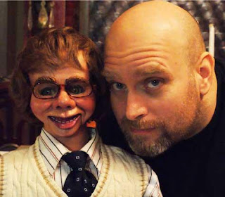

Teaching Ventriloquism
4/21/2010
{kind=link}

Question: I have been asked to give a class on Ventriloquism. I'd like to use your Ventriloquism In A Nutshell as the text. Is that okay with you? Right now I have 10 people interested but I am hoping to get about 20 to 25. I am enclosing a picture of me and my Charlie. He was an unmodified Charlie McCarthy doll I bought from you in the 1970's I think, I gave him a face lift for the new century, his name is still Charlie but no longer McCarthy. Phil Nichols* * * * * *
Answer: Yes, you are welcome to use the Nutshell book as your text. Others have done so (including myself) and it serves very nicely for that purpose. I'm excited to know you are sharing your skill! If you would like to make the Nutshell books available to your students, I can sell them to you in quantity at a discounted rate. You did a wonderful job on Charlie's face. I do believe I see a touch of McElroy influence. You obviously have talent as sculpturer and painter! Clinton